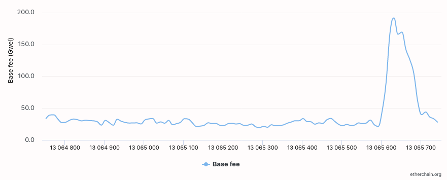
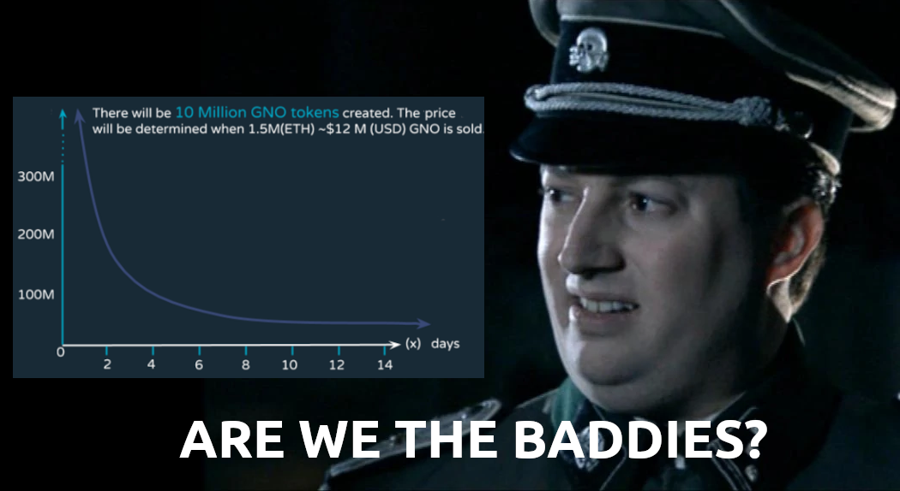
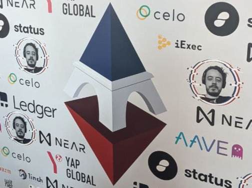
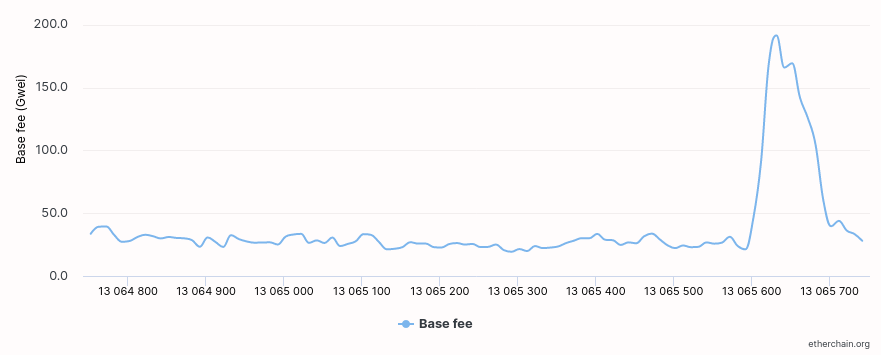
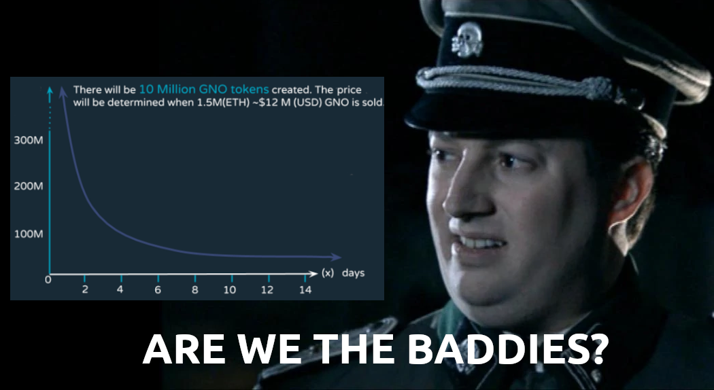
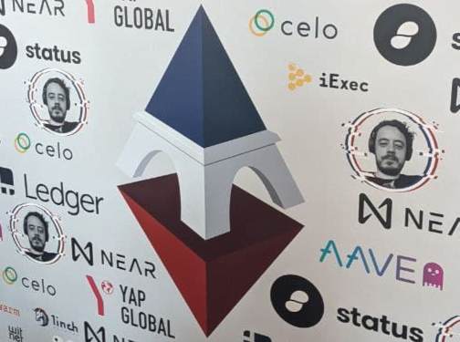

Alternatives to selling at below-market-clearing prices for achieving fairness (or community sentiment, or fun)
2021 Aug 22
See all posts
Alternatives to selling at below-market-clearing prices for achieving fairness (or community sentiment, or fun)
When a seller wants to sell a fixed supply of an item that is in high
(or uncertain and possibly high) demand, one choice that they often make
is to set a price significantly lower than what "the market will bear".
The result is that the item quickly sells out, with the lucky buyers
being those who attempted to buy first. This has happened in a number of
situations within the Ethereum ecosystem, notably NFT
sales and token sales / ICOs. But this
phenomenon is much older than that; concerts and restaurants frequently
make similar choices, keeping prices cheap and leading to seats quickly
selling out or buyers waiting in long lines.
Economists have for a long time asked the question: why do sellers do
this? Basic economic theory suggests that it's best if sellers
sell at the market-clearing price - that is, the price at which
the amount that buyers are willing to buy exactly equals the amount the
seller has to sell. If the seller doesn't know what the
market-clearing price is, the seller should sell through an
auction, and let the market determine the price. Selling below
market-clearing price not only sacrifices revenue for the seller; it
also can harm the buyers: the item may sell out so quickly that
many buyers have no opportunity to get it at all, no matter how much
they want it and are willing to pay to get it. Sometimes, the
competitions created by these non-price-based allocation mechanisms even
create negative externalities that harm third parties - an effect that,
as we will see, is particularly severe in the Ethereum ecosystem.
But nevertheless, the fact that below-market-clearing pricing
is so prevalent suggests that there must be some convincing reasons why
sellers do it. And indeed, as the research into this topic over
the last few decades has shown, there often are. And so it's worth
asking the question: are there ways of achieving the same goals with
more fairness, less inefficiency and less harm?
Selling
at below market-clearing prices has large inefficiencies and negative
externalities
If a seller sells an item at market price, or through an auction,
someone who really really wants that item has a simple path to
getting it: they can pay the high price or if it's an auction they can
bid a high amount. If a seller sells the item at below market price,
then demand exceeds supply, and so some people will get the item and
others won't. But the mechanism deciding who will get the item is
decidedly not random, and it's often not well-correlated with how much
participants want the item. Sometimes, it involves being faster at
clicking buttons than everyone else. At other times, it involves waking
up at 2 AM in your timezone (but 11 PM or even 2 PM in someone else's).
And at still other times, it just turns into an "auction by other
means", one which is more chaotic, less efficient and laden with far
more negative externalties.
Within the Ethereum ecosystem, there are many clear examples of this.
First, we can look at the ICO
craze of 2017. In 2017, there were a large number of projects
launching initial coin offerings (ICOs), and a typical model was the
capped sale: the project would set the price of the
token and a hard maximum for how many tokens they are willing to sell,
and at some point in time the sale would start automatically. Once the
number of tokens hit the cap, the sale ends.
What's the result? In practice, these sales would often end in as
little as 30 seconds. As soon as (or rather, just before) the sale
starts, everyone would start sending transactions in to try to get in,
offering higher and higher fees to encourage miners to include their
transaction first. An auction by another name - except with revenues
going to the miners instead of the token seller, and the extremely
harmful negative externality of pricing out every other application
on-chain while the sale is going on.

The most expensive transaction in the BAT sale set a fee of
580,000 gwei, paying a fee of $6,600 to get included in the
sale.
Many ICOs after that tried various strategies to avoid these gas
price auctions; one ICO notably had a smart contract that checked the
transaction's gasprice and rejected it if it exceeded 50 gwei. But that
of course, did not solve the problem. Buyers wishing to cheat the system
sent many transactions, hoping that at least one would get in.
Once again, an auction by another name, and this time clogging up the
chain even more.
In more recent times, ICOs have become less popular, but NFTs and NFT
sales are now very popular. Unfortunately, the NFT space failed to learn
the lessons from 2017; they make fixed-quantity fixed-supply sales just
like the ICOs did (eg. see the mint function on lines
97-108 of this
contract here). What's the result?

And this isn't even the biggest one; some NFT sales have
created gas price spikes as high as 2000 gwei.
Once again, sky-high gas prices from users fighting each other by
sending higher and higher transaction fees to get in first. An auction
by another name, pricing out every other application on-chain for 15
minutes, just as before.
So why do
sellers sometimes sell below market price?
Selling at below market price is hardly a new phenomenon, both within
the blockchain space and outside, and over the decades there have been many articles
and papers and podcasts
writing (and sometimes
bitterly complaining)
about the unwillingness to use auctions or set prices to market-clearing
levels.
Many of the arguments are very similar between the examples in the
blockchain space (NFTs and ICOs) and outside the blockchain space
(popular restaurants and concerts). A particular concern is fairness and
the desire to not lock poorer people out and not lose fans or create
tension as a result of being perceived as greedy. Kahneman, Knetsch and
Thaler's 1986 paper
is a good exposition of how perceptions of fairness and greed can
influence these decisions. In my own recollection of the 2017 ICO
season, the desire to avoid perceptions of greed was similarly a
decisive factor in discouraging the use of auction-like mechanisms (I am
mostly going off memory here and do not have many sources, though I
did find a link
to a no-longer-available parody video making some kind of comparison
between the auction-based Gnosis ICO and the National Socialist German
Workers' Party).

In addition to fairness issues, there are also the perennial
arguments that products selling out and having long lines creates a
perception of popularity and prestige, which makes the product seem even
more attractive to others further down the line. Sure, in a rational
actor model, high prices should have the same effect as long lines, but
in reality long lines are much more visible than high prices are. This
is just as true for ICOs and NFTs as it is for restaurants. In addition
to these strategies generating more marketing value, some people
actually find participating in or watching the game of grabbing up a
limited set of opportunities first before everyone else takes them all
to be quite fun.
But there are also some factors specific to the blockchain space. One
argument for selling ICO tokens at below-market-clearing prices (and one
that was decisive in convincing the OmiseGo team to adopt their capped
sale strategy) has to do with community dynamics of token issuance. The
most basic rule of community sentiment management is simple: you want
prices to go up, not down. If community members are "in the green", they
are happy. But if the price goes lower than what it was when the
community members bought, leaving them at a net loss, they become
unhappy and start calling you a scammer, and possibly creating a social
media cascade leading to everyone else calling you a scammer.
The only way to avoid this effect is to set a sale price low enough
that the post-launch market price will almost certainly be higher. But,
how do you actually do this without creating a rush-for-the-gates
dynamic that leads to an auction by other means?
Some more interesting
solutions
The year is 2021. We have a blockchain. The blockchain contains not
just a powerful decentralized finance ecosystem, but also a rapidly
growing suite of all kinds of non-financial tools. The blockchain
also presents us with a unique opportunity to reset social
norms. Uber legitimized surge pricing where decades of economists
yelling about "efficiency" failed; surely, blockchains can also be an
opportunity to legitimize new uses of mechanism design. And surely,
instead of fiddling around with a coarse-grained one-dimensional
strategy space of selling at market price versus below market price
(with perhaps a second dimension for auction versus fixed-price sale),
we could use our more advanced tools to create an approach that more
directly solves the problems, with fewer side effects?
First, let us list the goals. We'll try to cover the cases of (i)
ICOs, (ii) NFTs and (iii) conference tickets (really a type of NFT) at
the same time; most of the desired properties are shared between the
three cases.
- Fairness: don't completely lock low-income people
out of participating, give them at least some chance to get in. For
token sales, there's the not
quite identical but related goal of avoiding high initial wealth
concentration and having a larger and more diverse initial token holder
community.
- Don't create races: avoid creating situations where
lots of people are rushing to take the same action and only the first
few get in (this is the type of situation that leads to the horrible
auctions-by-another-name that we saw above).
- Don't require fine-grained knowledge of market
conditions: the mechanism should work even if the seller has
absolutely no idea how much demand there is.
- Fun: the process of participating in the sale
should ideally be interesting and have game-like qualities, but without
being frustrating.
- Give buyers positive expected returns: in the case
of a token (or, for that matter, an NFT), buyers should be more likely
to see the item go up in price than go down. This necessarily implies
selling to buyers at below the market price.
We can start by looking at (1). Looking at it from the point of view
of Ethereum, there is a pretty clear solution. Instead of creating race
conditions, just use an explicitly designed tool for the job: proof of personhood
protocols! Here's one quick proposed mechanism:
Mechanism 1 Each participant (verified by
proof-of-personhood) can buy up to X units at price
P, and if they want to buy more they can buy in an
auction.
It seems like it satisfies a lot of the goals already: the per-person
aspect provides fairness, if the auction price turns out higher than
P buyers can get positive expected returns for the portion
sold through the per-person mechanism, and the auction part does not
require the seller to understand the level of demand. Does it avoid
creating races? If the number of participants buying through the
per-person pool is not that high, it seems like it does. But what if so
many people show up that the per-person pool is not big enough to
provide an allocation for all of them?
Here's an idea: make the per-person allocation amount itself
dynamic.
Mechanism 2 Each participant (verified by
proof-of-personhood) can make a deposit into a smart contract to declare
interest for up to X tokens. At the end, each buyer is
given an allocation of min(X, N / number_of_buyers) tokens,
where N is the total amount sold through the per-person
pool (some other amount can also be sold by auction). The portion of the
buyer's deposit going above the amount needed to buy their allocation is
refunded to them.
Now, there's no race condition regardless of the number of buyers
going through the per-person pool. No matter how high the demand,
there's no way in which it's more beneficial to participate earlier
rather than later.
Here's yet another idea, if you like your game mechanics to be more
clever and use fancy quadratic formulas.
Mechanism 3 Each participant (verified by
proof-of-personhood) can buy \(X\)
units at a price \(P * X^2\), up to a
maximum of \(C\) tokens per buyer.
\(C\) starts at some low number, and
then increases over time until enough units are sold.
This mechanism has the particularly interesting property that if
you're making a governance token (please don't do that; this
is purely harm-reduction advice), the quantity allocated to each buyer
is theoretically optimal, though of course post-sale transfers will
degrade this optimality over time. Mechanisms 2 and 3 seem like they
both satisfy all of the above goals, at least to some extent. They're
not necessarily perfect and ideal, but they do make good
starting points.
There is one remaining issue. For fixed and limited-supply NFTs, you
might get the problem that the equilibrium purchased quantity per
participant is fractional (in mechanism 2, perhaps
number_of_buyers > N, and in mechanism 3, perhaps
setting \(C = 1\) already leads to
enough demand to over-subscribe the sale). In this case, you can sell
fractional items by offering lottery tickets: if there are
N items to be sold, then if you subscribe you have a chance
of N / number_of_buyers that you will actually get the
item, and otherwise you get a refund. For a conference, groups that want
to go together could be allowed to bundle their lottery tickets to
guarantee either all-win or all-lose. Ability to get the item for
certain can be sold at auction.

A fun mildly-grey-hat tactic for conference tickets is to
disguise the pool being sold at market rate as the bottom tier of
"sponsorships". You may end up with a bunch of people's faces on the
sponsor board, but... maybe that's fine? After all, EthCC had John Lilic's
face on their sponsor board!
In all of these cases, the core of the solution is simple: if you
want to be reliably fair to people, then your mechanism should
have some input that explicitly measures people. Proof of personhood
protocols do this (and if desired can be combined with zero knowledge proofs to
ensure privacy). Ergo, we should take the efficiency benefits of market
and auction-based pricing, and the egalitarian benefits of proof of
personhood mechanics, and combine them together.
Answers to possible
questions
Q: Wouldn't lots of people who don't even care about
your project buy the item through the egalitarian scheme and immediately
resell it?
A: Initially, probably not. In practice, such
meta-games take time to show up. But if/when they do, one possible
mitigation is to make them untradeable for some period of time. This
actually works because proof-of-personhood identities are untradeable:
you can always use your face to claim that your previous account got
hacked and the identity corresponding to you, including everything in
it, should be moved to a new account.
Q: What if I want to make my item accessible not
just to people in general, but to a particular community?
A: Instead of proof of personhood, use proof of participation tokens connected to
events in that community. An additional alternative, also serving both
egalitarian and gamification value, is to lock some items inside
solutions to some publicly-published puzzles.
Q: How do we know people will accept this? People
have been resistant to weird new mechanisms in the past.
A: It's very difficult to get people to accept a new
mechanism that they find weird by having economists write screeds about
how they "should" accept it for the sake of "efficiency" (or even
"equity"). However, rapid changes in context do an excellent job of
resetting people's set expectations. So if there's any good time at all
to try this, the blockchain space is that time. You could also wait for
the "metaverse",
but it's quite possible that the best version of the metaverse will run on Ethereum anyway, so you
might as well just start now.
Alternatives to selling at below-market-clearing prices for achieving fairness (or community sentiment, or fun)
2021 Aug 22 See all postsWhen a seller wants to sell a fixed supply of an item that is in high (or uncertain and possibly high) demand, one choice that they often make is to set a price significantly lower than what "the market will bear". The result is that the item quickly sells out, with the lucky buyers being those who attempted to buy first. This has happened in a number of situations within the Ethereum ecosystem, notably NFT sales and token sales / ICOs. But this phenomenon is much older than that; concerts and restaurants frequently make similar choices, keeping prices cheap and leading to seats quickly selling out or buyers waiting in long lines.
Economists have for a long time asked the question: why do sellers do this? Basic economic theory suggests that it's best if sellers sell at the market-clearing price - that is, the price at which the amount that buyers are willing to buy exactly equals the amount the seller has to sell. If the seller doesn't know what the market-clearing price is, the seller should sell through an auction, and let the market determine the price. Selling below market-clearing price not only sacrifices revenue for the seller; it also can harm the buyers: the item may sell out so quickly that many buyers have no opportunity to get it at all, no matter how much they want it and are willing to pay to get it. Sometimes, the competitions created by these non-price-based allocation mechanisms even create negative externalities that harm third parties - an effect that, as we will see, is particularly severe in the Ethereum ecosystem.
But nevertheless, the fact that below-market-clearing pricing is so prevalent suggests that there must be some convincing reasons why sellers do it. And indeed, as the research into this topic over the last few decades has shown, there often are. And so it's worth asking the question: are there ways of achieving the same goals with more fairness, less inefficiency and less harm?
Selling at below market-clearing prices has large inefficiencies and negative externalities
If a seller sells an item at market price, or through an auction, someone who really really wants that item has a simple path to getting it: they can pay the high price or if it's an auction they can bid a high amount. If a seller sells the item at below market price, then demand exceeds supply, and so some people will get the item and others won't. But the mechanism deciding who will get the item is decidedly not random, and it's often not well-correlated with how much participants want the item. Sometimes, it involves being faster at clicking buttons than everyone else. At other times, it involves waking up at 2 AM in your timezone (but 11 PM or even 2 PM in someone else's). And at still other times, it just turns into an "auction by other means", one which is more chaotic, less efficient and laden with far more negative externalties.
Within the Ethereum ecosystem, there are many clear examples of this. First, we can look at the ICO craze of 2017. In 2017, there were a large number of projects launching initial coin offerings (ICOs), and a typical model was the capped sale: the project would set the price of the token and a hard maximum for how many tokens they are willing to sell, and at some point in time the sale would start automatically. Once the number of tokens hit the cap, the sale ends.
What's the result? In practice, these sales would often end in as little as 30 seconds. As soon as (or rather, just before) the sale starts, everyone would start sending transactions in to try to get in, offering higher and higher fees to encourage miners to include their transaction first. An auction by another name - except with revenues going to the miners instead of the token seller, and the extremely harmful negative externality of pricing out every other application on-chain while the sale is going on.
The most expensive transaction in the BAT sale set a fee of 580,000 gwei, paying a fee of $6,600 to get included in the sale.
Many ICOs after that tried various strategies to avoid these gas price auctions; one ICO notably had a smart contract that checked the transaction's gasprice and rejected it if it exceeded 50 gwei. But that of course, did not solve the problem. Buyers wishing to cheat the system sent many transactions, hoping that at least one would get in. Once again, an auction by another name, and this time clogging up the chain even more.
In more recent times, ICOs have become less popular, but NFTs and NFT sales are now very popular. Unfortunately, the NFT space failed to learn the lessons from 2017; they make fixed-quantity fixed-supply sales just like the ICOs did (eg. see the
mintfunction on lines 97-108 of this contract here). What's the result?
And this isn't even the biggest one; some NFT sales have created gas price spikes as high as 2000 gwei.
Once again, sky-high gas prices from users fighting each other by sending higher and higher transaction fees to get in first. An auction by another name, pricing out every other application on-chain for 15 minutes, just as before.
So why do sellers sometimes sell below market price?
Selling at below market price is hardly a new phenomenon, both within the blockchain space and outside, and over the decades there have been many articles and papers and podcasts writing (and sometimes bitterly complaining) about the unwillingness to use auctions or set prices to market-clearing levels.
Many of the arguments are very similar between the examples in the blockchain space (NFTs and ICOs) and outside the blockchain space (popular restaurants and concerts). A particular concern is fairness and the desire to not lock poorer people out and not lose fans or create tension as a result of being perceived as greedy. Kahneman, Knetsch and Thaler's 1986 paper is a good exposition of how perceptions of fairness and greed can influence these decisions. In my own recollection of the 2017 ICO season, the desire to avoid perceptions of greed was similarly a decisive factor in discouraging the use of auction-like mechanisms (I am mostly going off memory here and do not have many sources, though I did find a link to a no-longer-available parody video making some kind of comparison between the auction-based Gnosis ICO and the National Socialist German Workers' Party).

In addition to fairness issues, there are also the perennial arguments that products selling out and having long lines creates a perception of popularity and prestige, which makes the product seem even more attractive to others further down the line. Sure, in a rational actor model, high prices should have the same effect as long lines, but in reality long lines are much more visible than high prices are. This is just as true for ICOs and NFTs as it is for restaurants. In addition to these strategies generating more marketing value, some people actually find participating in or watching the game of grabbing up a limited set of opportunities first before everyone else takes them all to be quite fun.
But there are also some factors specific to the blockchain space. One argument for selling ICO tokens at below-market-clearing prices (and one that was decisive in convincing the OmiseGo team to adopt their capped sale strategy) has to do with community dynamics of token issuance. The most basic rule of community sentiment management is simple: you want prices to go up, not down. If community members are "in the green", they are happy. But if the price goes lower than what it was when the community members bought, leaving them at a net loss, they become unhappy and start calling you a scammer, and possibly creating a social media cascade leading to everyone else calling you a scammer.
The only way to avoid this effect is to set a sale price low enough that the post-launch market price will almost certainly be higher. But, how do you actually do this without creating a rush-for-the-gates dynamic that leads to an auction by other means?
Some more interesting solutions
The year is 2021. We have a blockchain. The blockchain contains not just a powerful decentralized finance ecosystem, but also a rapidly growing suite of all kinds of non-financial tools. The blockchain also presents us with a unique opportunity to reset social norms. Uber legitimized surge pricing where decades of economists yelling about "efficiency" failed; surely, blockchains can also be an opportunity to legitimize new uses of mechanism design. And surely, instead of fiddling around with a coarse-grained one-dimensional strategy space of selling at market price versus below market price (with perhaps a second dimension for auction versus fixed-price sale), we could use our more advanced tools to create an approach that more directly solves the problems, with fewer side effects?
First, let us list the goals. We'll try to cover the cases of (i) ICOs, (ii) NFTs and (iii) conference tickets (really a type of NFT) at the same time; most of the desired properties are shared between the three cases.
We can start by looking at (1). Looking at it from the point of view of Ethereum, there is a pretty clear solution. Instead of creating race conditions, just use an explicitly designed tool for the job: proof of personhood protocols! Here's one quick proposed mechanism:
It seems like it satisfies a lot of the goals already: the per-person aspect provides fairness, if the auction price turns out higher than
Pbuyers can get positive expected returns for the portion sold through the per-person mechanism, and the auction part does not require the seller to understand the level of demand. Does it avoid creating races? If the number of participants buying through the per-person pool is not that high, it seems like it does. But what if so many people show up that the per-person pool is not big enough to provide an allocation for all of them?Here's an idea: make the per-person allocation amount itself dynamic.
Now, there's no race condition regardless of the number of buyers going through the per-person pool. No matter how high the demand, there's no way in which it's more beneficial to participate earlier rather than later.
Here's yet another idea, if you like your game mechanics to be more clever and use fancy quadratic formulas.
This mechanism has the particularly interesting property that if you're making a governance token (please don't do that; this is purely harm-reduction advice), the quantity allocated to each buyer is theoretically optimal, though of course post-sale transfers will degrade this optimality over time. Mechanisms 2 and 3 seem like they both satisfy all of the above goals, at least to some extent. They're not necessarily perfect and ideal, but they do make good starting points.
There is one remaining issue. For fixed and limited-supply NFTs, you might get the problem that the equilibrium purchased quantity per participant is fractional (in mechanism 2, perhaps
number_of_buyers > N, and in mechanism 3, perhaps setting \(C = 1\) already leads to enough demand to over-subscribe the sale). In this case, you can sell fractional items by offering lottery tickets: if there areNitems to be sold, then if you subscribe you have a chance ofN / number_of_buyersthat you will actually get the item, and otherwise you get a refund. For a conference, groups that want to go together could be allowed to bundle their lottery tickets to guarantee either all-win or all-lose. Ability to get the item for certain can be sold at auction.
A fun mildly-grey-hat tactic for conference tickets is to disguise the pool being sold at market rate as the bottom tier of "sponsorships". You may end up with a bunch of people's faces on the sponsor board, but... maybe that's fine? After all, EthCC had John Lilic's face on their sponsor board!
In all of these cases, the core of the solution is simple: if you want to be reliably fair to people, then your mechanism should have some input that explicitly measures people. Proof of personhood protocols do this (and if desired can be combined with zero knowledge proofs to ensure privacy). Ergo, we should take the efficiency benefits of market and auction-based pricing, and the egalitarian benefits of proof of personhood mechanics, and combine them together.
Answers to possible questions
Q: Wouldn't lots of people who don't even care about your project buy the item through the egalitarian scheme and immediately resell it?
A: Initially, probably not. In practice, such meta-games take time to show up. But if/when they do, one possible mitigation is to make them untradeable for some period of time. This actually works because proof-of-personhood identities are untradeable: you can always use your face to claim that your previous account got hacked and the identity corresponding to you, including everything in it, should be moved to a new account.
Q: What if I want to make my item accessible not just to people in general, but to a particular community?
A: Instead of proof of personhood, use proof of participation tokens connected to events in that community. An additional alternative, also serving both egalitarian and gamification value, is to lock some items inside solutions to some publicly-published puzzles.
Q: How do we know people will accept this? People have been resistant to weird new mechanisms in the past.
A: It's very difficult to get people to accept a new mechanism that they find weird by having economists write screeds about how they "should" accept it for the sake of "efficiency" (or even "equity"). However, rapid changes in context do an excellent job of resetting people's set expectations. So if there's any good time at all to try this, the blockchain space is that time. You could also wait for the "metaverse", but it's quite possible that the best version of the metaverse will run on Ethereum anyway, so you might as well just start now.